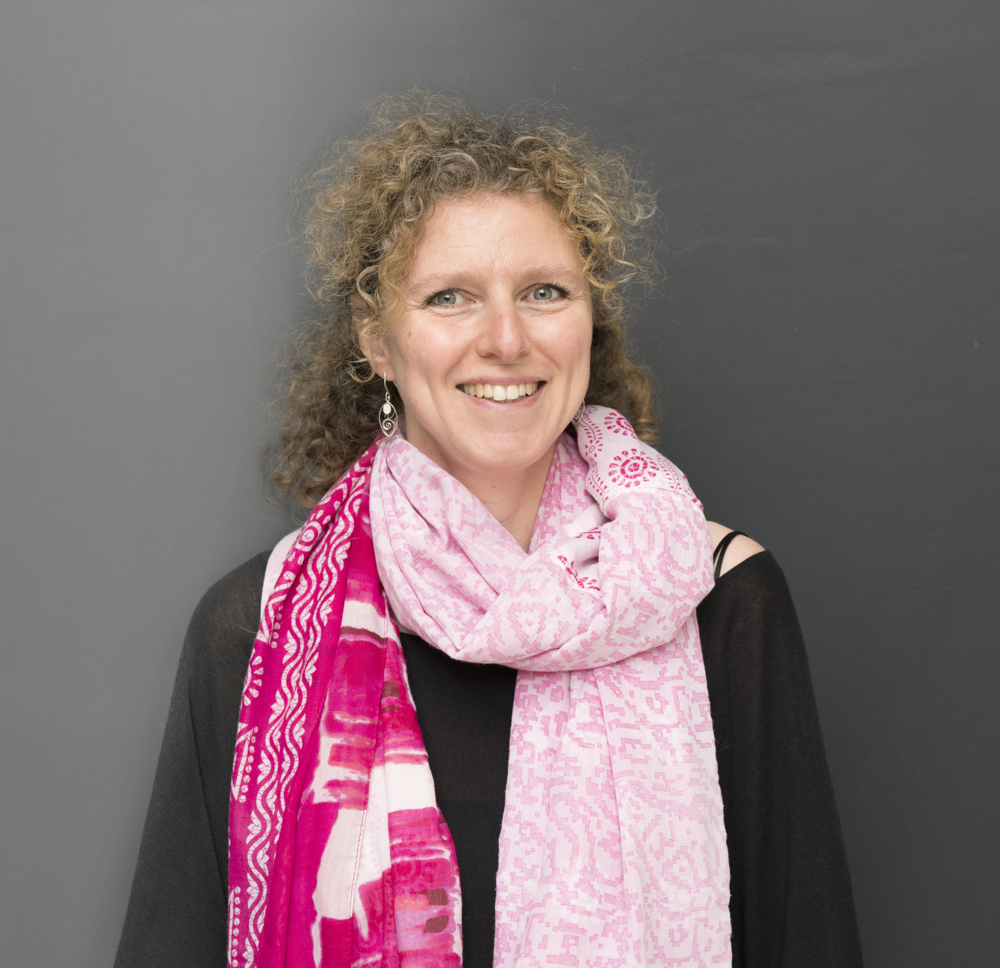
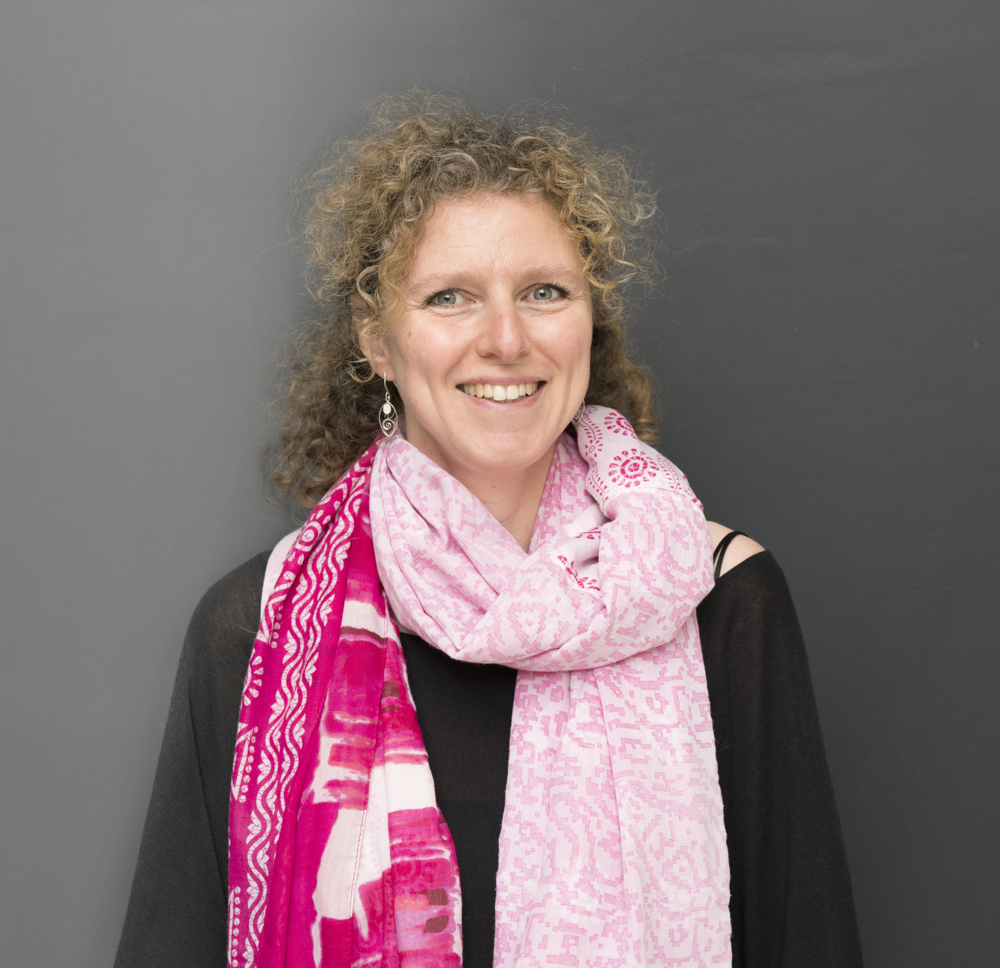

Muriel Berliner
Graphiste spécialisée dans les emballages, j'ai travaillé pour des grands groupes internationaux et la grande distribution. Au-delà de l'aspect créatif du métier, mes valeurs m'ont poussée à me réorienter vers un domaine où l’humain et la santé sont au premier plan.
Confrontée aux problématiques des intolérances alimentaires, lorsque je deviens maman, il y a 20 ans, je fais mes premières découvertes dans ce qui allait devenir ma passion, «la nutrition»!
Quelques années plus tard, être soignée par un médecin nutritionniste fut une expérience étonnante, découvrir les systèmes si subtils et perfectionnés de notre corps où tout est question de chimie et d’équilibres et ou alimentation rime avec prévention... ce fut le coup de foudre !
En 2016, je m’inscris au Cerden (Centre Européen de Recherche, de Développement et Enseignement de la Nutrithérapie), après trois années de formations et une de perfectionnement, j’obtiens mon Bachelier de conseillère en nutrition humaine.
J’approfondis mes connaissances en participant à des séminaires sur : le NASH, la préconception, l’épigénétique, le microbiote,… ), je me plonge dans des lectures enthousiasmantes, je participe à des ateliers culinaires qui ravissent mes papilles gourmandes de nature... manger n’est pas seulement un besoin, c’est aussi une grande source de plaisir !